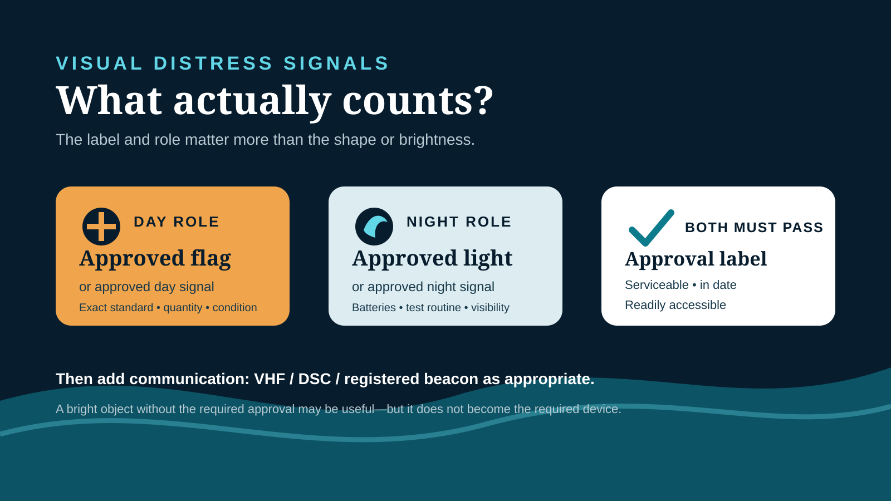

Editorial disclosure: This guide compares signal categories using current federal and New York requirements, approval standards, service-life rules and practical use cases. It does not claim hands-on testing. Retail links may be affiliate links that support Nautical Dream without changing the price you pay. Approval status, batteries, service life and included equipment vary by exact model; inspect the delivered label and instructions before relying on any device.
Affiliate disclosure: Nautical Dream may earn a commission from qualifying purchases made through marked retail links, at no additional cost to you. Recommendations remain editorially independent. As an Amazon Associate I earn from qualifying purchases.
A visual distress signal has two jobs that shopping pages often blur together. It may satisfy a carriage requirement, and it may help rescuers find the boat. A device can be useful for one job without satisfying the other. Federal rules cover specified coastal waters and the high seas; New York's equipment rules can require signals on inland waters as well. That is why the right buying sequence starts with the operating area and boat, then separates day from night, and only then compares pyrotechnic and electronic equipment.
See the decision before shopping
The framework below separates the questions a product photograph cannot answer: where the boat operates, whether the signal counts by day or night, what the approval label actually says, and whether the crew can reach it when needed. It is a selection aid, not a substitute for the current regulations or the label on the delivered device.

The sixty-second decision
For a family boat that needs both day and night signals, the cleanest non-pyrotechnic framework is an approved electric distress light that satisfies the night role plus an approved orange distress flag that satisfies the day role. The word approved matters twice: each exact device must meet the standard for its role. A single electronic light does not automatically cover daytime carriage, and a flag is not a night signal.
Pyrotechnics can cover day, night or both depending on their approval category. Under 33 CFR 175.130, several listed flare and smoke types require three signals, while one qualifying electric distress light meets the night-only federal requirement and one qualifying orange flag meets the day-only requirement. State rules, vessel use and local enforcement still matter. New York currently lists both daytime and nighttime visual distress signals for motorboats from 16 feet to less than 26 feet.
| System | Best fit | Main advantage | Main failure mode |
|---|---|---|---|
| Approved light + approved flag | Owners avoiding pyrotechnics | No flare expiration cycle | Wrong approval, dead batteries or buried flag |
| Approved pyrotechnic set | Crews trained to use and store it | Bright, familiar distress indication | Expiration, heat damage or unsafe handling |
| Layered system | Offshore or higher-consequence use | Different tools for different conditions | Complexity without a crew briefing |
Start with jurisdiction, not the product page
Federal Subpart C applies to boats on U.S. coastal waters and the high seas beyond the territorial seas. Within that scope, boats 16 feet or longer generally need approved day and night signals; boats under 16 feet need night signals when operated between sunset and sunrise, subject to the rule's exceptions. Manually propelled boats and certain open sailboats receive daytime exceptions under the federal rule but still need qualifying night signals when used at night.
That federal scope does not erase state requirements. New York's current boating page lists daytime and nighttime visual distress signals for motorboats 16 feet to less than 26 feet. It also lists a daytime distress signal for personal watercraft. Before buying, write down: vessel type, length, propulsion, waterway, whether operation can extend past sunset, and any state or local requirement. Use the stricter applicable rule when requirements overlap, and confirm unusual cases with the responsible agency or a vessel-safety examiner.
Electronic does not mean any electronic light
The eCFR recognizes an electric distress light meeting 46 CFR 161.013 for the night-only role. That is a specific approval standard, not a description of anything that flashes SOS. A flashlight, dive strobe, bicycle light, phone screen, automotive beacon or unapproved “marine emergency light” may attract attention, but it should not be counted as the required device.
Read the product label, manual and Coast Guard approval information for the exact model. Confirm whether batteries are included, replaceable or rechargeable; how the unit indicates battery condition; whether the instructions require a test interval; and what mounting or flotation accessories are part of the approved configuration. Do not assume a product family shares one approval across every color, bundle or revision.
Approved electronic boat distress light
Compare exact approval marking, battery plan, flotation, controls and cold-weather operation.
Check current priceApproved orange boat distress flag
Verify the 46 CFR approval marking, dimensions, display method and dry storage.
Check current pricePyrotechnic flares trade permanence for intensity
Approved hand flares, aerial signals and orange smoke can create an unmistakable cue, but they introduce heat, flame, launch direction, storage and disposal problems. Different approval categories satisfy different day or night roles. The eCFR table—not the shape of the package—controls what counts and how many are required. Some aerial signals also require a compatible approved launcher.
Every crew member who may use a pyrotechnic signal should read the exact instructions ashore. Never “test” a live signal from the boat, dock or yard. Never point or fire one toward people, vessels, fuel, structures, dry vegetation or aircraft. In a real distress, use only when it can be done without creating a second emergency and when the signal is likely to be observed. Keep hot residue away from passengers and combustible materials.
Expiration and serviceability are separate checks
33 CFR 175.125 requires each required signal to be serviceable and, when a service-life date is marked, not expired. An in-date flare damaged by water or heat is not serviceable. An electronic light with corroded contacts, swollen batteries, a cracked lens or an uncertain charge state is not ready simply because it has no pyrotechnic expiration date.
Inspect the system at the start of the season and monthly while the boat is active. Record each approval designation, expiration date, battery type and test date in the boat log. Replace batteries on the device manufacturer's schedule, not by guessing from how bright it looks in a garage. Keep spares only when the instructions allow them and keep contacts protected from loose metal objects.
Expired pyrotechnics do not count toward the required complement. If local authorities permit retaining them as supplemental signals, segregate them clearly from the current set so a passenger does not grab the wrong package. Ask the local fire department, law-enforcement marine unit or household hazardous-waste program for disposal directions. Do not fire expired signals for practice or place them in ordinary trash without explicit local instructions.
Storage must survive the emergency
Federal rules require the signals to be readily accessible. That means the kit cannot live beneath coolers, locked behind sleeping gear or hidden where only the owner knows the latch. Use a dry, labeled location reachable from the cockpit without entering an engine or fuel space. Keep pyrotechnics in the packaging and orientation required by their manufacturer; a generic waterproof box does not override ventilation, temperature or separation instructions.
A dedicated container can organize approved devices, gloves and instructions, but the container itself does not make its contents compliant. Choose a size that keeps labels readable, avoids crushing the flag and prevents battery terminals or launchers from moving loosely. Mounting must not block flotation, fire extinguishers, controls or an exit.
Build a signaling ladder, not a single-device fantasy
Visual signals work best as one layer in a communication plan. The operator should first protect life, control immediate hazards and make an early distress call with position when communications are available. A VHF radio, DSC alert, registered locator beacon and visual signals solve different parts of the problem. None replaces the others automatically.
Use the site's VHF distress-call practice and predeparture checklist to connect the gear to a repeatable crew sequence.
Supplemental signals: useful, but do not count them twice
A signal mirror, waterproof flashlight, whistle, dye marker or bright cloth may improve detectability in a specific environment. Treat each as supplemental unless the exact device bears the approval required for the carriage role. Marketing phrases such as “Coast Guard style,” “marine grade,” “SOLAS color,” “emergency ready” or “visible for miles” are not substitutes for an approval number.
A mirror is inexpensive, has no battery and can be useful in daylight when the sun and observer geometry cooperate. It requires practice that does not flash drivers, aircraft or nearby operators. A strong waterproof flashlight helps identify the boat and read equipment at night, but it is not automatically an approved electric distress light.
What not to buy
- A light whose listing says “SOS” but never identifies a Coast Guard approval standard.
- A day flag with the wrong dimensions, pattern or no approval marking.
- A mixed flare kit whose count includes non-approved accessories as if they were signals.
- A launcher or cartridge assumed compatible because the package looks similar.
- Old surplus pyrotechnics with unknown heat, water or storage history.
- A rechargeable light without a documented charging and predeparture test routine.
Do not buy by claimed visibility range alone. Atmospheric conditions, observer height, waves, background light and product condition all affect detection. Do not buy the most complicated system unless the normal crew can identify, access and use every component. The best kit is the smallest complete legal system with a realistic inspection routine, backed by communications and extra tools appropriate to the trip.
The final purchase and inspection checklist
A vessel-safety check is a better answer than guessing. On a commercial, inspected or unusually equipped vessel, this recreational guide is not enough; use the controlling regulations and a qualified marine-safety professional.
Frequently asked questions
Does one electronic distress light replace boat flares?
Only for the role its exact approval covers. Under the federal rule, a qualifying electric distress light meets the night-only requirement. A qualifying orange flag or other approved day signal is still needed when a day requirement applies.
Do visual distress signals expire?
Signals with a marked service-life date must be within that date and serviceable to count. Pyrotechnics commonly carry expiration dates. Electronic devices still require condition, battery and manufacturer-prescribed testing even when no pyrotechnic date applies.
Do inland New York boats need flares or electronic signals?
New York currently lists day and night visual distress signals for motorboats 16 feet to less than 26 feet, even though the federal Subpart C scope is coastal waters and the high seas. Confirm the rules for the exact boat and waterway.
Can I keep expired flares aboard?
They do not count toward a required complement. If local authorities allow them as supplemental signals, separate them clearly from the current set and obtain local hazardous-disposal instructions.
Is a waterproof flashlight an approved night distress signal?
Not automatically. Only count an electric light that meets the applicable approval standard and bears the required identification. A flashlight may still be useful supplemental equipment.